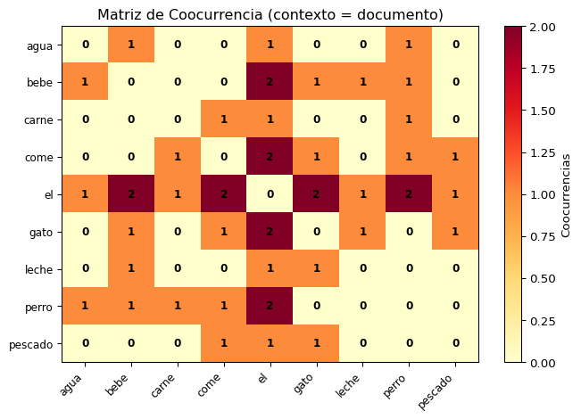
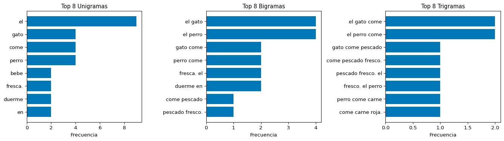
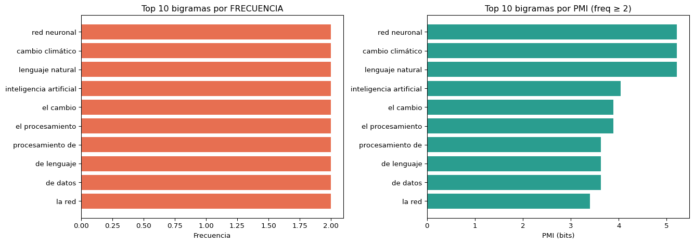

flowchart LR A["S1: One-hot & BoW<br>✅ Representación básica"] --> B["S2: TF-IDF<br>✅ Pesos inteligentes"] B --> C["S3: PMI & N-gramas<br>🎯 Hoy"] C --> D["Semana 3<br>Modelos de Lenguaje"] style A fill:#2a9d8f,color:#fff style B fill:#2a9d8f,color:#fff style C fill:#0077b6,color:#fff,stroke:#023e8a,stroke-width:3px style D fill:#e9c46a,color:#000
flowchart LR
A["S1: One-hot & BoW<br>✅ Representación básica"] --> B["S2: TF-IDF<br>✅ Pesos inteligentes"]
B --> C["S3: PMI & N-gramas<br>🎯 Hoy"]
C --> D["Semana 3<br>Modelos de Lenguaje"]
style A fill:#2a9d8f,color:#fff
style B fill:#2a9d8f,color:#fff
style C fill:#0077b6,color:#fff,stroke:#023e8a,stroke-width:3px
style D fill:#e9c46a,color:#000
Sesión
Pregunta que responde
S1: BoW
¿Cómo representar un documento como un vector?
S2: TF-IDF
¿Qué palabras son importantes en un documento?
S3: PMI
¿Qué palabras tienden a aparecer juntas?
La Pregunta de Hoy
TF-IDF mide importancia individual
TF-IDF nos dice que “inteligencia” es relevante en un documento, pero no nos dice nada sobre la relación entre palabras.
Queremos medir asociación
¿Qué pares de palabras aparecen juntos más de lo esperado por azar?
“inteligencia” + “artificial” → ¡Mucho más que por azar!
“inteligencia” + “zapato” → Independientes
Pregunta Central
Dadas dos palabras \(x\) e \(y\), ¿su coocurrencia es sorprendente o simplemente un producto del azar?
Bloque 2: Coocurrencia de Palabras
¿Qué es la Coocurrencia?
Dos palabras coocurren cuando aparecen juntas en un contexto definido (oración, ventana de palabras, documento).
Tipos de contexto
Contexto
Definición
Documento
Ambas aparecen en el mismo doc
Oración
Ambas en la misma oración
Ventana
A distancia ≤ \(k\) palabras
Ejemplo: ventana de tamaño 2
"El gato negro come pescado fresco"
Ventana alrededor de “come”:
[negro, come, pescado] ^^^^
Coocurrencias de “come”: {negro, pescado}
Matriz de Coocurrencia
import numpy as npfrom collections import Counter, defaultdictcorpus = ["el gato come pescado","el perro come carne","el gato bebe leche","el perro bebe agua",]# Construir matriz de coocurrencia (contexto = documento)docs_tokenizados = [doc.split() for doc in corpus]vocabulario =sorted(set(w for doc in docs_tokenizados for w in doc))vocab_idx = {w: i for i, w inenumerate(vocabulario)}cooc = np.zeros((len(vocabulario), len(vocabulario)), dtype=int)for doc in docs_tokenizados: palabras_unicas =set(doc)for w1 in palabras_unicas:for w2 in palabras_unicas:if w1 != w2: cooc[vocab_idx[w1]][vocab_idx[w2]] +=1# Mostrar las primeras filasimport pandas as pddf_cooc = pd.DataFrame(cooc, index=vocabulario, columns=vocabulario)print(df_cooc.to_string())
import matplotlib.pyplot as pltfig, ax = plt.subplots(figsize=(7, 5))im = ax.imshow(cooc, cmap='YlOrRd', aspect='auto')ax.set_xticks(range(len(vocabulario)))ax.set_xticklabels(vocabulario, rotation=45, ha='right', fontsize=9)ax.set_yticks(range(len(vocabulario)))ax.set_yticklabels(vocabulario, fontsize=9)ax.set_title('Matriz de Coocurrencia (contexto = documento)', fontsize=12)for i inrange(len(vocabulario)):for j inrange(len(vocabulario)): color ='white'if cooc[i][j] >2else'black' ax.text(j, i, str(cooc[i][j]), ha='center', va='center', fontsize=9, fontweight='bold', color=color)plt.colorbar(im, label='Coocurrencias')plt.tight_layout()plt.show()

Coocurrencia con Ventana Deslizante
import numpy as npimport pandas as pdcorpus = ["el gato negro come pescado fresco en la cocina","el perro grande come carne roja en el parque",]# Construir vocabulariodocs_tokenizados = [doc.split() for doc in corpus]vocabulario =sorted(set(w for doc in docs_tokenizados for w in doc))vocab_idx = {w: i for i, w inenumerate(vocabulario)}V =len(vocabulario)def construir_coocurrencia(docs, ventana=2):"""Construir matriz de coocurrencia con ventana deslizante.""" cooc = np.zeros((V, V), dtype=int)for doc in docs:for i, w1 inenumerate(doc): inicio =max(0, i - ventana) fin =min(len(doc), i + ventana +1)for j inrange(inicio, fin):if i != j: cooc[vocab_idx[w1]][vocab_idx[doc[j]]] +=1return cooccooc_v2 = construir_coocurrencia(docs_tokenizados, ventana=2)# Mostrar solo las filas interesantespalabras_interes = ["come", "gato", "perro", "pescado", "carne"]indices = [vocab_idx[w] for w in palabras_interes if w in vocab_idx]df_sub = pd.DataFrame(cooc_v2[np.ix_(indices, indices)], index=palabras_interes, columns=palabras_interes)print(f"Coocurrencia (ventana=2), submatriz:\n{df_sub.to_string()}")
Se basa en teoría de la información (Shannon, 1948)
Mide “sorpresa” de la coocurrencia
Rango: \((-\infty, +\infty)\)
Simétrica: PMI(x,y) = PMI(y,x)
Origen
PMI proviene del concepto de información mutua en teoría de la información. La variante “puntual” se refiere a un par específico de eventos, no a la esperanza sobre todos los pares.
PMI: Cálculo Manual
import numpy as npfrom collections import Countercorpus = ["el gato come pescado fresco","el perro come carne roja","el gato bebe leche fresca","el perro bebe agua fresca","el gato come ratón pequeño","el perro come hueso grande",]# Tokenizar y construir coocurrencias (contexto = documento)docs = [doc.split() for doc in corpus]N_docs =len(docs)# P(x): fracción de documentos que contienen xdef p_word(w):returnsum(1for doc in docs if w in doc) / N_docs# P(x, y): fracción de documentos que contienen ambasdef p_pair(w1, w2):returnsum(1for doc in docs if w1 in doc and w2 in doc) / N_docs# Calcular PMIdef pmi(w1, w2): px = p_word(w1) py = p_word(w2) pxy = p_pair(w1, w2)if pxy ==0:returnfloat('-inf')return np.log2(pxy / (px * py))pares = [ ("gato", "come"), ("perro", "come"), ("gato", "pescado"), ("gato", "carne"), ("el", "come"), ("gato", "bebe"), ("perro", "hueso"), ("gato", "agua"),]print(f"{'Par (x,y)':<22}{'P(x)':>6}{'P(y)':>6}{'P(x,y)':>7}{'PMI':>8}")print("-"*55)for x, y in pares: px, py, pxy = p_word(x), p_word(y), p_pair(x, y) val = pmi(x, y) indicador ="🟢"if val >0else ("⚪"if val ==0else"🔴")print(f"({x}, {y}){'':<12}{px:>6.2f}{py:>6.2f}{pxy:>7.2f}{val:>+8.3f}{indicador}")
Si reemplazamos los conteos brutos de una matriz de coocurrencia con sus valores PPMI, obtenemos una representación vectorial de cada palabra que captura asociaciones semánticas.
Dato Histórico: PPMI ≈ Word2Vec
En 2014, Levy & Goldberg demostraron algo sorprendente:
“Word2Vec con Skip-gram y Negative Sampling está implícitamente factorizando una matriz PPMI desplazada”
\[W_{SG} \approx M_{PPMI} - \log k\]
Donde \(k\) es el número de muestras negativas.
. . .
Implicación: Las matrices PPMI y Word2Vec capturan la misma información, solo difieren en la eficiencia de representación.
Code
graph TD A["Matriz PPMI<br>(dispersa, alta dim)"] --> C["Capturan la<br>misma información"] B["Word2Vec<br>(densa, baja dim)"] --> C style A fill:#e9c46a,color:#000 style B fill:#2a9d8f,color:#fff style C fill:#0077b6,color:#fff
graph TD
A["Matriz PPMI<br>(dispersa, alta dim)"] --> C["Capturan la<br>misma información"]
B["Word2Vec<br>(densa, baja dim)"] --> C
style A fill:#e9c46a,color:#000
style B fill:#2a9d8f,color:#fff
style C fill:#0077b6,color:#fff
Referencia
Levy & Goldberg (2014). “Neural Word Embedding as Implicit Matrix Factorization”
Bloque 5: N-gramas a Profundidad
Más Allá de los Unigramas
En S1 vimos N-gramas brevemente con CountVectorizer. Ahora profundizamos: N-gramas como base para modelos de lenguaje.
Definición
Un N-grama es una secuencia contigua de \(N\) elementos de un texto.
N
Nombre
Ejemplo
1
Unigrama
“gato”
2
Bigrama
“gato negro”
3
Trigrama
“el gato negro”
4
4-grama
“el gato negro come”
¿Para qué sirven?
📊 Modelos de Lenguaje: predecir la siguiente palabra
🔍 Detección de idioma
✍️ Corrección ortográfica
🔐 Autoría: ¿quién escribió esto?
📖 Colocaciones: frases hechas
Extracción de N-gramas
from nltk import ngramstexto ="el gato negro come pescado fresco en la cocina"tokens = texto.split()for n inrange(1, 5): ngramas =list(ngrams(tokens, n)) nombre = ["unigramas", "bigramas", "trigramas", "4-gramas"][n-1]print(f"{nombre.upper()} ({len(ngramas)}):")for ng in ngramas:print(f" {' '.join(ng)}")print()
UNIGRAMAS (9):
el
gato
negro
come
pescado
fresco
en
la
cocina
BIGRAMAS (8):
el gato
gato negro
negro come
come pescado
pescado fresco
fresco en
en la
la cocina
TRIGRAMAS (7):
el gato negro
gato negro come
negro come pescado
come pescado fresco
pescado fresco en
fresco en la
en la cocina
4-GRAMAS (6):
el gato negro come
gato negro come pescado
negro come pescado fresco
come pescado fresco en
pescado fresco en la
fresco en la cocina
Frecuencia de N-gramas
from nltk import ngramsfrom collections import Countercorpus ="""el gato come pescado fresco. el perro come carne roja.el gato bebe leche fresca. el perro bebe agua fresca.el gato come ratón pequeño. el perro come hueso grande.el gato duerme en la alfombra. el perro duerme en el jardín.""".lower()tokens = corpus.split()# Contar bigramas más frecuentesbigramas =list(ngrams(tokens, 2))conteo_bi = Counter(bigramas)print("Top 10 bigramas más frecuentes:\n")print(f"{'Bigrama':<25}{'Frecuencia':>10}")print("-"*37)for bigrama, freq in conteo_bi.most_common(10):print(f"{' '.join(bigrama):<25}{freq:>10}")
Top 10 bigramas más frecuentes:
Bigrama Frecuencia
-------------------------------------
el gato 4
el perro 4
gato come 2
perro come 2
fresca. el 2
duerme en 2
come pescado 1
pescado fresco. 1
fresco. el 1
come carne 1
Visualización: Top N-gramas
Code
import matplotlib.pyplot as pltfrom nltk import ngramsfrom collections import Counterfig, axes = plt.subplots(1, 3, figsize=(14, 4))for ax, n, titulo inzip(axes, [1, 2, 3], ["Unigramas", "Bigramas", "Trigramas"]): ngs =list(ngrams(tokens, n)) conteo = Counter(ngs) top = conteo.most_common(8) labels = [" ".join(ng) for ng, _ in top] values = [c for _, c in top] ax.barh(labels[::-1], values[::-1], color='#0077b6') ax.set_title(f'Top 8 {titulo}', fontsize=11) ax.set_xlabel('Frecuencia')plt.tight_layout()plt.show()

N-gramas de Caracteres
Los N-gramas también se aplican a nivel de caracteres, lo cual es útil para:
Detección de idioma
Corrección ortográfica
Manejo de palabras fuera de vocabulario (OOV)
from nltk import ngramsfrom collections import Counterdef char_ngrams(texto, n=3):"""Extraer N-gramas de caracteres."""returnlist(ngrams(texto, n))textos = {"Español": "el gato come pescado","Inglés": "the cat eats fish","Francés": "le chat mange du poisson",}for idioma, texto in textos.items(): cng = char_ngrams(texto.replace(" ", "_"), n=3) top3 = Counter(cng).most_common(5) top3_str = [f"'{''.join(ng)}'"for ng, _ in top3]print(f"{idioma:10s}: {', '.join(top3_str)}")
import matplotlib.pyplot as pltfig, axes = plt.subplots(1, 2, figsize=(14, 5))# Top por frecuenciatop_freq =sorted(resultados, key=lambda x: x[1], reverse=True)[:10]axes[0].barh([r[0] for r in top_freq][::-1], [r[1] for r in top_freq][::-1], color='#e76f51')axes[0].set_title('Top 10 bigramas por FRECUENCIA', fontsize=12)axes[0].set_xlabel('Frecuencia')# Top por PMI (filtrar freq >= 2 para evitar ruido)top_pmi =sorted([r for r in resultados if r[1] >=2], key=lambda x: x[4], reverse=True)[:10]axes[1].barh([r[0] for r in top_pmi][::-1], [r[4] for r in top_pmi][::-1], color='#2a9d8f')axes[1].set_title('Top 10 bigramas por PMI (freq ≥ 2)', fontsize=12)axes[1].set_xlabel('PMI (bits)')plt.tight_layout()plt.show()

Observación
Frecuencia favorece bigramas con palabras comunes (“de la”, “el cambio”)
import nltkfrom nltk.collocations import BigramCollocationFinder, BigramAssocMeasuresfrom nltk.tokenize import word_tokenizenltk.download('punkt_tab', quiet=True)texto ="""La inteligencia artificial está transformando el mundo moderno.Las redes neuronales profundas procesan grandes cantidades de datos.El aprendizaje automático permite crear modelos predictivos potentes.La ciencia de datos combina estadística y programación avanzada.El procesamiento de lenguaje natural analiza texto automáticamente.Las bases de datos almacenan información de manera estructurada.La inteligencia artificial y el aprendizaje automático son complementarios.Las redes neuronales artificiales imitan el funcionamiento del cerebro.El cambio climático es un desafío global que requiere acción inmediata.La computación en la nube permite escalar recursos de forma eficiente."""tokens = word_tokenize(texto.lower(), language='spanish')# Encontrar colocacionesfinder = BigramCollocationFinder.from_words(tokens)finder.apply_freq_filter(2) # Filtrar bigramas con frecuencia < 2# Métricas disponiblesmedidas = BigramAssocMeasures()print("Top colocaciones por PMI:")for bigrama, score in finder.score_ngrams(medidas.pmi)[:8]:print(f" {bigrama[0]+' '+bigrama[1]:<30} PMI: {score:.2f}")
Top colocaciones por PMI:
aprendizaje automático PMI: 5.66
inteligencia artificial PMI: 5.66
redes neuronales PMI: 5.66
las redes PMI: 5.07
la inteligencia PMI: 4.34
de datos PMI: 4.07
el aprendizaje PMI: 4.07
. las PMI: 3.34
PMI vs Otras Medidas de Asociación
Medidas comunes
Medida
Fórmula simplificada
PMI
\(\log\frac{P(x,y)}{P(x)P(y)}\)
Chi-cuadrado
\(\frac{(O-E)^2}{E}\)
Likelihood Ratio
\(2\sum O \log\frac{O}{E}\)
t-test
\(\frac{\bar{x} - \mu}{s/\sqrt{n}}\)
¿Cuál usar?
PMI: Buena para vocabularios grandes, sesgo hacia raros
Chi-cuadrado (\(\chi^2\)): Robusta, no asume normalidad
Likelihood Ratio: Mejor con datos escasos
t-test: Conservadora, pocos falsos positivos
Recomendación Práctica
Para corpus pequeños: Likelihood Ratio.
Para corpus grandes: PMI con filtro de frecuencia mínima.
Bloque 7: Aplicación Integradora
Análisis Completo de un Corpus
Combinemos todo lo aprendido en la Semana 2:
from sklearn.feature_extraction.text import TfidfVectorizerfrom sklearn.metrics.pairwise import cosine_similarityfrom nltk.collocations import BigramCollocationFinder, BigramAssocMeasuresfrom nltk.tokenize import word_tokenizeimport numpy as npcorpus = ["Bolivia tiene una gran diversidad de flora y fauna en sus bosques amazónicos","La selva amazónica boliviana alberga miles de especies de fauna y flora silvestre","Las redes neuronales profundas han revolucionado la inteligencia artificial moderna","La inteligencia artificial usa redes neuronales para procesar información compleja","El fútbol boliviano tiene una liga profesional con equipos de todo el país","La liga del fútbol profesional boliviano atrae a miles de aficionados cada semana",]
Paso 1: TF-IDF y Similitud
tfidf = TfidfVectorizer()X = tfidf.fit_transform(corpus)sim = cosine_similarity(X)nombres = ["Biodiversidad 1", "Biodiversidad 2", "IA 1", "IA 2", "Fútbol 1", "Fútbol 2"]print("Similitud Coseno (TF-IDF):\n")print(f"{'':18s}", " ".join(f"{n:>16s}"for n in nombres))for i, nombre inenumerate(nombres): fila =" ".join(f"{sim[i][j]:>16.3f}"for j inrange(len(nombres)))print(f"{nombre:18s}{fila}")
Similitud Coseno (TF-IDF):
Biodiversidad 1 Biodiversidad 2 IA 1 IA 2 Fútbol 1 Fútbol 2
Biodiversidad 1 1.000 0.207 0.000 0.000 0.152 0.037
Biodiversidad 2 0.207 1.000 0.040 0.040 0.064 0.184
IA 1 0.000 0.040 1.000 0.378 0.000 0.041
IA 2 0.000 0.040 0.378 1.000 0.000 0.041
Fútbol 1 0.152 0.064 0.000 0.000 1.000 0.287
Fútbol 2 0.037 0.184 0.041 0.041 0.287 1.000
Paso 2: Colocaciones con PMI
# Tokenizar todo el corpustodos_tokens = []for doc in corpus: todos_tokens.extend(word_tokenize(doc.lower(), language='spanish'))# Encontrar colocacionesfinder = BigramCollocationFinder.from_words(todos_tokens)finder.apply_freq_filter(2)medidas = BigramAssocMeasures()print("Colocaciones detectadas (PMI, freq ≥ 2):\n")for bigrama, score in finder.score_ngrams(medidas.pmi)[:10]: freq = finder.ngram_fd[bigrama]print(f" '{bigrama[0]}{bigrama[1]}' → PMI: {score:+.2f} (freq: {freq})")